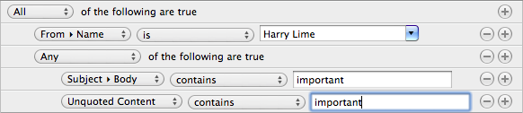

The basic means of organizing email is through the use of mailboxes. MailMate supports 3 kinds of mailboxes which are described in the following subsections. For all mailbox types the following is useful to know:
You can change the displayed count of messages for a mailbox (unread, flagged, …).
You can change the currently selected mailbox using “Go to Mailbox…” (⌘T). This opens a window listing all mailboxes. Advanced filtering is supported and your favorite abbreviations for mailboxes are cached. Without filtering, the list is sorted such that the most recently used mailbox is at the top.
You can move selected messages to any (IMAP) mailbox using “Move to Mailbox…” (⌥⌘T). Again, filtering and abbreviations are supported.
The standard mailboxes are the mailboxes which cannot be changed, because they have a standard purpose. The first mailbox in the mailbox outline, “All Messages”, contains all messages in your IMAP account(s) except those in the designated mailboxes for deleted messages or messages marked as junk.
Below “All Messages” you find the a well-known set of standard mailboxes: “Inbox”, “Drafts”, “Sent Messages”, “Junk”, and “Deleted Messages”. There is also a mailbox named “Archive”. As the name implies, this mailbox is intended for archiving messages. If you have multiple IMAP accounts configured then these mailboxes are universal, that is, they unify mailboxes across multiple IMAP accounts. It is possible to expand these mailboxes if one wants to see which account a message is located in.
The universal mailboxes can also be used as targets for moving messages. MailMate will move the messages such that they each stay within their original IMAP account.
Note: The mailbox for “Sent Messages” has an additional level of mailboxes if an account has multiple addresses. One mailbox for each identity used as a from address.
MailMate encourages the use of so-called “smart” mailboxes. These are virtual mailboxes which show messages which belong to a specified set of mailboxes and which match some set of conditions. When handling a new message in the Inbox, the basic decision to make is whether it should be archived or trashed. The rest should be handled by smart mailboxes.
Below the universal mailboxes in the mailbox outline you find a range of smart mailboxes which exemplifies what is possible with MailMate. In particular, note the “Mailing Lists” mailbox: If you have any mailing list messages they are automatically divided into smart mailboxes as children of the “Mailing Lists” mailbox. There is currently no graphical user interface for making this kind of mailbox yourself (but you can edit a file). The same goes for the automatically displayed children of the “Unread” mailbox.
Double-click any smart mailbox in order to see how it has been configured.
When creating a new smart mailbox or when editing an existing mailbox, the mailbox editor is opened. The content of a smart mailbox is based on the content of one or more other mailboxes and an optional set of conditions. If you hold down the option key (⌥) then the plus buttons will change into “…” buttons (a general feature of Mac OS X). This can be used to create more complicated any/all (boolean) constructions.
The most interesting part of the mailbox editor is the popup for choosing the headers used for filtering. The default set of headers is reminiscent of other email applications, but there are some important differences. Many of the headers in the menu have submenus providing more exact values for filtering. For example, instead of searching the entire “From” header for an email address, you can explicitly match the email address with “From ▸ Address”. Also note that when entering a value in the text field for a match, the value is automatically completed. Finally, if you try the “Other…” menu item then you get access to a full list of all headers seen in the imported messages.
Two special “headers” can be used to search in the body text of messages. One for unqouted body text and another for quoted body text.
The popup used to select the type of comparison is also interesting. Case sensitivity is an option and you can also choose to match on the headers in any body part of a message. Make sure you try selecting the “is in” type of comparison. This allows you to compare with the headers of messages in some other mailbox. For an example of this, try editing the “Examples ▸ Personal Inbox” mailbox.
Tagging is a simple concept, but it’s a very powerful tool when organizing your messages. You can can us it to apply tags to your messages and then utilitize the tags when searching and, in particular, when creating smart mailboxes.
MailMate offers two ways to create new tags. You can do it in the “Tags” preferences pane or you can do it by simply entering a new tag name in the tags editor. The tags editor is shown when you hit the shortcut key which is simply t by default (configurable in the preferences pane). A text field is shown and you can then enter and/or remove tags for the currently selected message. Changes are committed if you hit enter (↩) and cancelled if you hit the escape key. When entering tags they are automatically completed using the set of known tags.
When multiple messages are selected then the tags editor has two text fields; one for tags to be added and another for tags to be removed from the selected messages.
If the currently selected message has any tags then they are shown in the expanded headers view. Clicking on a tag searches for messages with the same tag. Holding down ⌥ searches the current mailbox only (like all other link searches). The tags are also available for searching and in smart mailbox conditions.
Note that the composer allows the user to assign tags to drafts as well.
The implementation of tags in MailMate is based on IMAP keywords. This means that the tags are synchronized with the IMAP server if possible. The use of tags in MailMate can be limited by the support of IMAP keywords by the IMAP server. Some servers may have an upper limit on the number of IMAP keywords and some may not support them at all. Feedback is welcome if you have any problems with such limitations.
IMAP keywords only support a subset of ASCII characters. MailMate handles this by maintaining a list of tag names and their corresponding IMAP keywords. The tag names are displayed in the user interface and the IMAP keywords are used when synchronzing with the server. Unfortunately this means that the tag names are not synchronized.